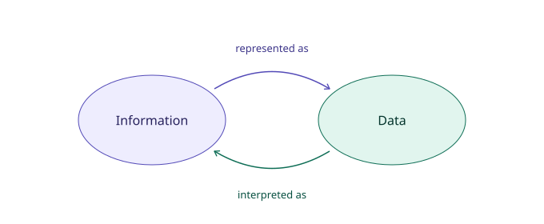
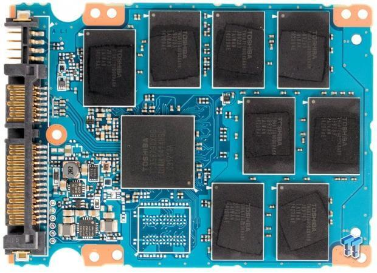
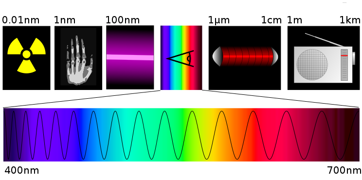
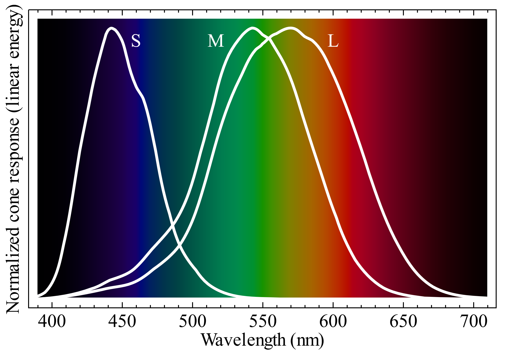

CPSC 203, 2026 W1
September 17, 2026

Words
Numbers
(255, 0, 0)#FF0000Today we’re exploring a fundamental question: How do we represent the world as data?
Note that “representation” has (at least) two meanings:
What does data look like to a computer?
Detect voltage levels (actually the presence of electrical charges in tiny capacitors).
Binary digits –> “bits”

| 3 | 1 | 5 | 7 |
| 103 = 1000 | 102 = 100 | 101 = 10 | 100 = 1 |
| 1 | 1 | 0 | 1 |
| [2]3 = 8 | [2]2 = 4 | [2]1 = 2 | [2]0 = 1 |
We can represent integers, so we can assign integers to any other (discrete) data
Let’s see how this works with colour.

How does light wavelength become colour? Biological interpretation
What’s your favorite colour? Psychological interpretation
Does that colour influence your dress/decor/purchases? Cultural interpretation

So we only need to figure out how to manage blends of three colors!
Can we use integers to represent colours?
255, 0, 127) == ?Why 256 possible values?
0 1 0 1 1 0 1 1 0 1 0 1 1 0 1 1 0 1 0 1 1 0 1 1
What colour is this?
Easier to read if we use hexadecimal (base-16) representation:
0123456789abcdef0 1 0 1 | 1 0 1 1 | 0 1 0 1 | 1 0 1 1 | 0 1 0 1 | 1 0 1 1
5 | b | 5 | b | 5 | b
What colour is this 24-bit number?
0110 0111 0100 1110 1010 0111
0123456789abcdef